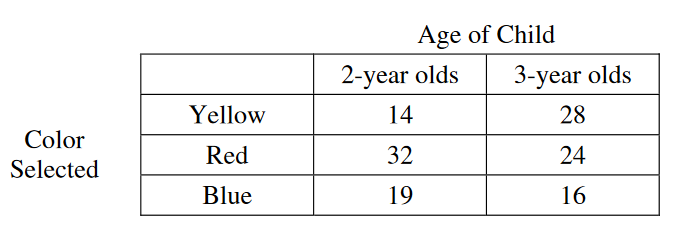

Each of 133 children in a sample was asked to choose a pencil. Three different colors were available: yellow, red, and blue. The number of 2-year olds and 3-year olds who selected each color is shown in the table above. In a test of independence of age and color, which of the following is used as the expected cell count for 2-year olds who select a yellow pencil?